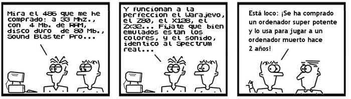
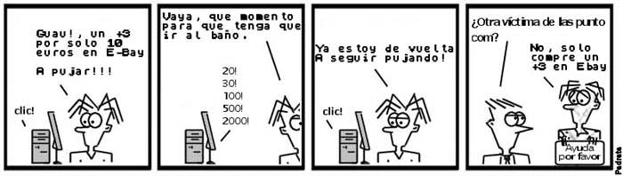
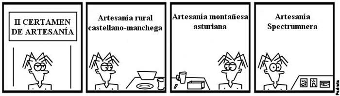
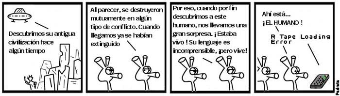

HISTORIA ILUSTRADA(y poco seria)DEL
SPECTRUM:
1992-Quién sabe cuándo
Una vez desaparecido el Spectrum del ámbito comercial, los emuladores fueron
el siguiente paso en la escala evolutiva. Todos aquellos que habían cambiado
su viejo Spectrum por un Atari, un Amiga, o un PC, se resistían a ver morir
a su amada máquina. Era la época en la cual aparecieron los primeros emuladores.
Internet todavía era un sueño para los usuarios de a pie, así que la distribución
de los emuladores corrió a cargo de las revistas. El primer emulador distribuido
de forma masiva fue el "Spectrum", de Pedro Gimeno, que fue incluido en uno de
los discos de la revista PCManía en el número de diciembre de 1992.
|  |
|
Muchos usuarios descubrieron con los emuladores uno de los aspectos más tristes
del mundo del PC: la continua actualización de los equipos para evitar quedar
desfasados. Provenientes en su mayoría de arquitecturas cerradas que podían durar
años, los nuevos usuarios del PC veían con impotencia cómo para emular una máquina
de algo menos de 4 MHz se necesitaban casi 40 MHz de potencia en sus nuevos PCs.
Los requisitos para los emuladores, aunque cada vez más altos, no han alcanzado las
cotas que otros programas (juegos y sistemas operativos) requieren para funcionar.
|
Las revistas fueron las primeras impulsoras de la emulación del Spectrum, pero
enseguida fueron relevadas por algo mucho más grande: Internet. La red de redes
se convirtió primero en el repositorio de todo programa creado con el Spectrum
en forma de grandes FTPs donde albergar archivos SNA y Z80 de los juegos.
Posteriormente, con el abaratamiento de los costes de los proveedores, comenzaron
a surgir páginas de antiguos usuarios que dedicaban su tiempo libre a añadir
información. De esta época es WOS, el Gran Portal del Spectrum.
|
|
El 13 de diciembre de 1993, poco antes de las 5 de la tarde, se envió el primer
mensaje al grupo de noticias comp.sys.sinclair. Habían nacido las newsgroups del
Spectrum. Internet, tal y como lo conocemos ahora, todavía estaba en pañales. Y
en esa época se creó un grupo de noticias dedicado al Spectrum. Por desgracia,
los años habían pasado para todos. Por aquella época, Sir Clive Sinclair estaba
inmerso en el mantenimiento de un nuevo negocio de venta de software por catálogo,
y ya por aquel entonces ni siquiera recordaba el nombre de los modelos del Spectrum.
|
Una vez que los emuladores habían alcanzado un alto nivel de desarrollo, los
usuarios, ávidos de experiencias con el Spectrum, quisieron retomar las
sensaciones que habían tenido durante los años del Spectrum. Es la época
de la vuelta al ordenador original, de usar el verdadero Spectrum, sabiendo
que no era lo mismo utilizar un emulador que utilizar la máquina real.
|  |
|
Se inició entonces una búsqueda incansable de todo aquel producto original
que fuera exclusivo del Spectrum. En los rastros desaparecieron las cintas
de juegos de 8 bits, las cuales años atrás habían sido muy numerosas. Mención
aparte merecen los periféricos y los propios ordenadores. Muchos de estos
aparatos habían desaparecido, perdidos en algún cubo de basura. Otros estaban muy
dañados y era imposible repararlos al no fabricarse desde hace tiempo. Los que
quedan en pleno funcionamiento son pocos, por lo que los precios son elevados.
Estos precios se disparan cuando la demanda en aun mayor y cuando las formas de
conseguirlo se reducen a unas pocas vías: los rastros dejan de ser sacros lugares
para el que quiera recuperar sus ordenadores antiguos. Las subastas por Internet
son casi la única opción, eso sí, a precios prohibitivos.
|
El esfuerzo personal de cada usuario, sin ningún tipo de ánimo de lucro, es
lo que ha sostenido al Spectrum desde el año 1992. La colaboración era, en todo
caso, desinteresada. La dedicación exigida era mayor en una época en la que los
antiguos niños que habían disfrutado con el Spectrum se convertían en personas
adultas, con mayores responsabilidades y mucho menos tiempo libre. Algunos
abandonaron. Otros se reengancharon al conocer, gracias a Internet, el movimiento
existente en torno al Spectrum.
|  |
|
Si en la época de máximo esplendor del Spectrum una compañía podía sacar fácilmente
3 ó 4 juegos al mes, ahora, sin ningún tipo de apoyo económico ni comercial, un
usuario de este ordenador con suficientes conocimientos podía sacar 1 ó 2 juegos
como mucho al año. La falta de software, de novedades, se ha convertido en la
asignatura pendiente de la escena Spectrumnera. Los pocos juegos que salen a
la luz tardan meses (en algunos casos hasta años) en finalizar su desarrollo.
Lo que antes hacía un equipo de 10 personas a dedicación total, ahora lo tiene
que hacer una única persona en sus ratos libres. Por eso los juegos de ahora son
productos artesanales, hechos a mano, con muchas limitaciones técnicas, pero a la
vez con mucho interés y cariño.
|
¿Qué nos deparará el futuro? ¿Qué problemas va a tener el Spectrum a lo largo de
la próxima década? El principal escollo que hay que salvar es la falta de suministros. Los
Spectrum serán máquinas con más de 20 años, los cuales, no hay que olvidarlo,
tuvieron éxito gracias a su fabricación con materiales baratos, que lograron
precios muy bajos en su mejor época. Ya hay modelos fabricados por Sinclair que
están escaseando bastante: es difícil a estas alturas encontrar Spectrums de
16k, 128k, y QL. ¿Nos ofrecerá la tecnología del futuro una forma de crear chips
antiguos de una forma barata y sencilla que solucione estos problemas?
|  |
|
Siempre habrá algún Spectrum capaz de sobrevivir a sus contemporáneos. Siempre
habrá algún ordenador de Sinclair que haya sido conservado en condiciones
excepcionales y sea posible su funcionamiento.
|
"Y entre los muertos, habrá siempre una lengua viva, para decir que el Spectrum existe..."